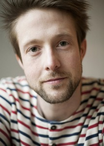
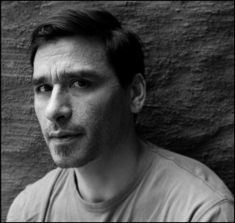
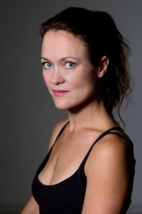
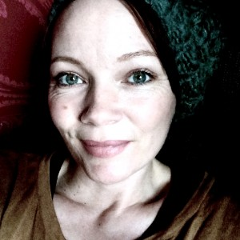

Le Clip med Pascal Luneau, visning av showreels
- Kategori:
- Åpne arrangementer
Åpne arrangementer
Åpent for alle som jobber innen kulturfeltet, inkludert studenter. - Dato:
- 21.04.2015 til 21.04.2015
- Start kl :
- 15:30
- Slutt kl :
- 00:00
- Adresse:
- Lillebil, Cinemateket, Oslo
 Le Clip / visning av showreels
Le Clip / visning av showreels
med Pascal Luneau
Den internajonalt anerkjente skuespillercoachen som bl. a. coachet Marion Cotillard til Oscar for La Vie En Rose er tilbake på Norsk Skuespillersenter.
Denne gangen har han spesialskrevet korte scener for 10 skuespillere, filmet og klippet og satt de sammen til en visning. Le Clip som han kaller konseptet er beregnet på skuespillere som ønsker nytt materiale til sine showreels, f.eks. dersom ønsker å presentere andre sider ved seg selv som skuespiller.
Vi ønsker velkommen fra kl 15.30, med visning kl 16.00. Her vil Pascal presentere hvordan han jobber og dere får se klippene han har laget. Visningen varer ca en time. Møt Pascal og skuespillerne i Filmkaféen etter visningen.
For castere, regissører, produsenter og andre som ser etter skuespillere til sine produksjoner.
Påmelding for publikummere, send e-post: ivar@skuespillersenter.no
Med:
{kind=link}
Siste sett i Shellshock på La Monnaie i Brussel, forestilling regissert av Sidi Larbi Cherkaoui, av Nick Cave og Nicholas Lens. Filmdebuterte som Annushka i Joe Wright´s Anna Karenina og samarbeidet med Joe Wright igjen i en Chanel kortfilm. For tiden aktuell i White Horse, regi av Carl Eric Rinch (47 Ronin) og med LINKED som har premiere i Bærum Kulturhus i April, i tillegg til flere ulike forestillinger med koreografen Sidi Larbi Cherkaoui. Guro er bosatt i Oslo og ansatt i Skuespiller og Danser alliansen.
Ivar Furre Aam
{kind=link}
29 år, fra Trondheim, utdannet ved Teaterhögskolan i Stockholm og Akademi for Scenekunst. Sist sett i Apokalypse da av REBEKKA/HUY. Spilte bl.a. Mesrin i den kritikerroste oppsetningen av Disputten ved Nationaltheatret og i Lisa Lies Blue Motell ved Trøndelag Teater og Blackbox Teater. Regidebuterte med The Expression of the Emotions. For tiden aktuell i Blue Motell og Skogsunderholdning.
Link til skuespillerkatalogen her.
 Julie Moe Sandø
Julie Moe Sandø
27 år, utdannet ved Teaterhögskolan i Göteborg 2011-2014.
Spilte Nora i "Vad som hände efter att Nora lämnat sin man" av Elfride Jelinek ved Folkteatern i Göteborg. Spilte i Adrian Posepilt og Puppan te Pappa ved Trøndelag Teater. Nå aktuell med Folkehelsa av Carl Frode Tiller ved Nord-trøndelag Teater
 Eilsabeth Hagli Aars
Eilsabeth Hagli Aars
Elisabet Hagli Aars er utdannet skuespiller fra GITIS Scandinavia, hvor hun var ferdig i 2014. Hun har jobbet som frilans skuespiller siden og har blant annet spilt i ”Storm og Silke” på Teater Innlandet, ”Freaky Otto” på Akershus Teater, ”Reisen til Julestjernen” på Haugesund Teater. Sist sett i ”Elidas Ocean” med LOOP LOOP LOOP, og ”Den Perfekte Samtalen” som gjestet Vinterlysfestivalen 2015, regi Øystein Ulsberg Brager. Hun spilte den unge Merete i Brennpunkt dokumentaren ”Meretes historie”, regi Svein Bæren, og har medvirket i kortfilmene ”Vannlije”, regi Mai-Linn Saltnes Hansen og “Noen ganger flyr de faktisk”, regi Petter Tangmyr.
{kind=link}
Camilla er utdannet ved the Academy of Live and Recorded Arts i London og the New York Film Academy ved Universal Studios i Los Angeles. I 2013 satte hun opp forestillingen "Danny og det blå dypet" av John Patrick Shanley på Caféteatret, der hun spilte rollen som "Roberta".
Hjemmeside: www.camillaroman.com
Duc Mai-The
{kind=link}
Duc Mai-The, 47 år fra Oslo, er utdannet ved Statens teaterhøyskole og har jobbet ved bl.a. Riksteatret, Nationaltheatret, Teater Ibsen, Rogaland teater, Torshovteatret og Hålogaland teater. Var høsten 2014 å se i «Inntrengerne» av Mikkel Bugge ved Teater Innlandet, i regi av Gard B. Eidsvold.
Han ble nominert til Heddaprisen for beste mannlige medspiller, for rollen som Pozzo i «Mens vi ventar på Godot» i 2014. Regien var ved Bjørn Sundquist, og forestillingen var et samarbeid mellom Riksteatret og det Norske teatret.
Duc er også en av skuespillerne som er ansatt i Skuespiller- og Danseralliansen, Skuda. Hjemmeside: www.gutogkar.no
 Trude-Sofie O. Anthonsen
Trude-Sofie O. Anthonsen
Trude-Sofie er utdannet skuespiller fra Nordisk Institutt for Scene og Studio. 32 år, opprinnelig fra Vesterålen i Nordland. Sist sett i "Et Dukkehjem - revisited" av Fix & Foxy, en samproduksjon mellom Det Kongelige Teater i København og Nationaltheatret.
Oddrun Valestrand
{kind=link}
Tok BA ved London Studio Center, jobbet i england og tyskland, og har siden vært engasjert ved Bl.a. Den Nationale Scene, Chat Noir, Brageteatret og hatt sentrale roller i Claire De Wangens produksjoner siden 2010. Medvirket i bl. a. Dag, Helt Perfekt, Mammon og blir å se i De Klarsynte. Snart aktuell med Kinder K, regi Øystein Brager, hovedrollen i Spelet om Emma Hjort, og Claire De Wangens neste produksjon høsten 2015.
{kind=link}
Sørlending med 4 års utdanning ved East 15 Acting school i London. Har skapt teater med blandt annet Steve Marmion (Artistic Dir. Soho Theatre), John Gillett (Forfatter"Acting on impuls") og Jonathan Holloway. Han var i utviklings ensembel av tre separate prosjekter til Edinburgh Fringe festival 2011. Siden da har han gjort reklamer og kortfilmer.
Nå bosatt i Oslo, hvor han jobber som frilanse skuespiller. www.oddaudor-bentsen.squarespace.com
Siri Helene Müller
{kind=link}
Siri Helene Müller har medvirket i kortfilmene French Lesson (regi: Nic Osborne) og Brukerstøtte (regi: André Øvredal). Sistnevnte vant publikumsprisen på Kortfilmfestivalen i Grimstad.
Hun blir å se i Øvredals nye futuristiske kortfilm, Tunnelen, som nærmer seg ferdigstilling.
Siri Helene skal spille den ene hovedrollen i Osbornes spillefilm Remember Me, som er under utvikling.
For tiden skriver Siri Helene sitt første spillefilmmanus